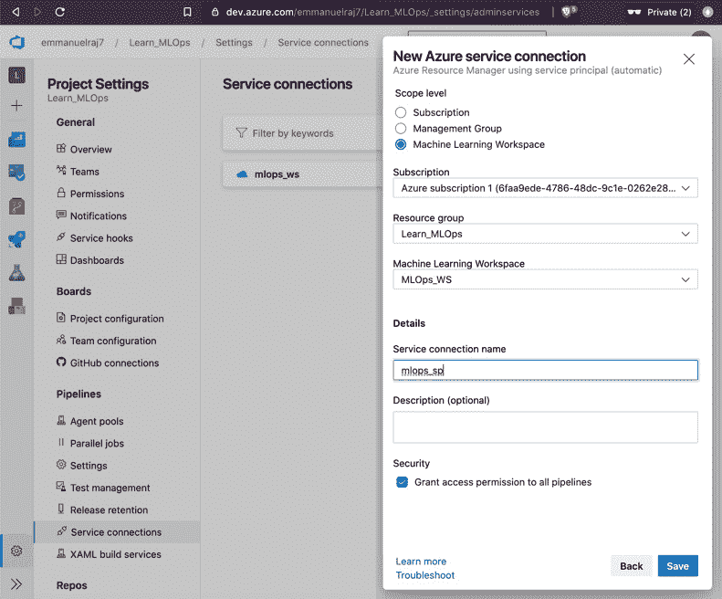
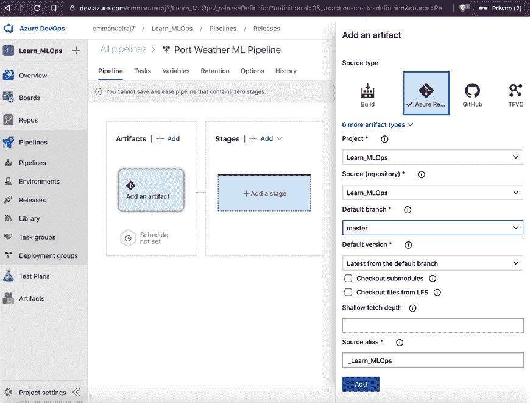
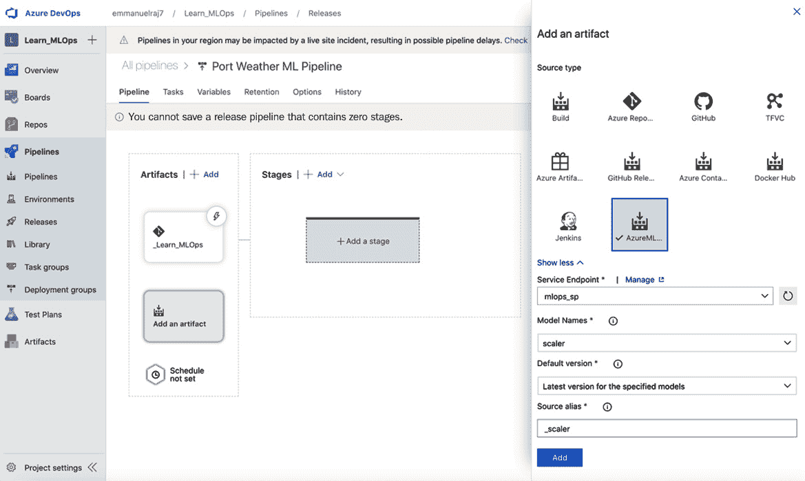
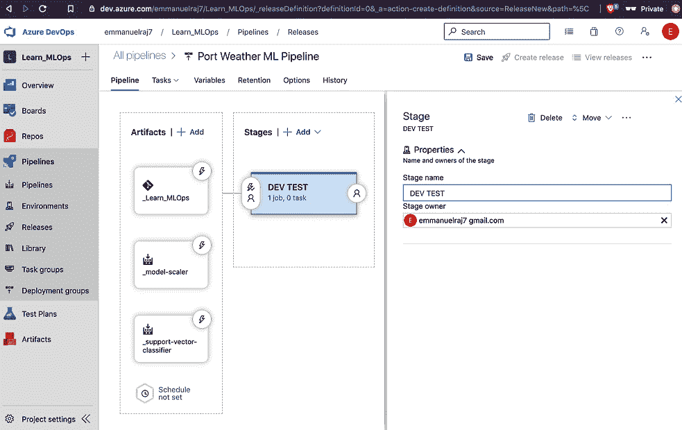
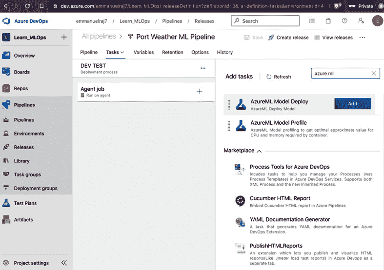
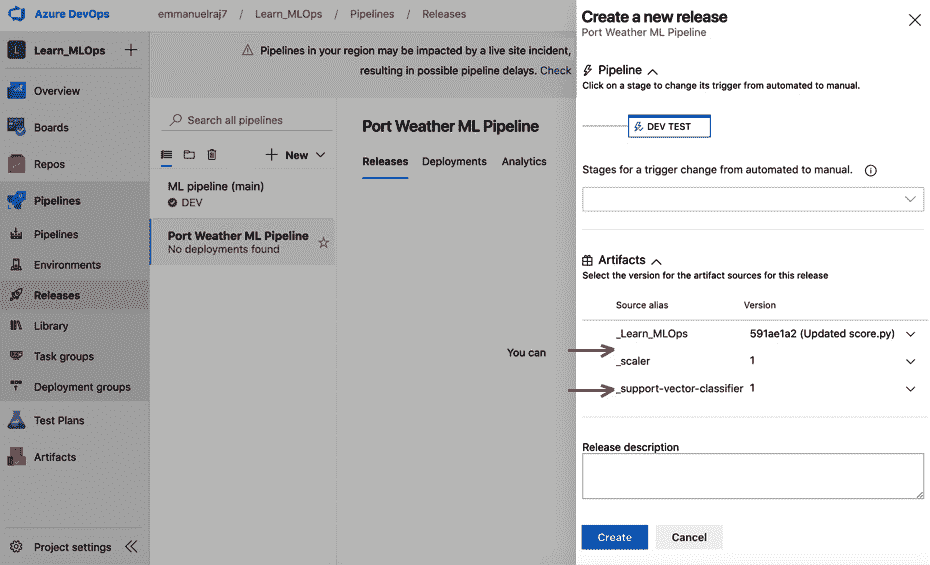
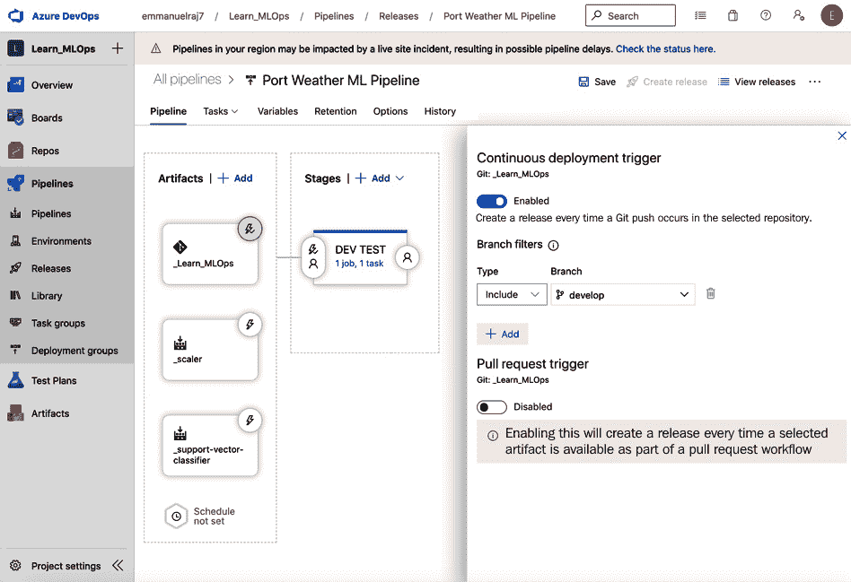

第 7 章:构建强大的 CI/CD 管道
在本章中，您将了解 MLOps 管道中的连续操作。您将在本章中学习的原则是在业务环境中推动持续部署的关键。为了获得全面的理解和第一手经验，我们将同时浏览概念和实际操作。我们将为测试环境建立一个 CI/CD 管道，同时了解持续集成 ( CI )和持续部署 ( CD )的组件、管道测试以及触发器的版本和类型。这将使您具备自动部署机器学习 ( ML )模型管道的技能，以适应业务的持续学习能力。让我们首先看看为什么我们在 MLOps 中需要 CI/CD。我们将继续探讨以下其他主题:
m lops 中的持续集成、交付和部署
自动化是 MLOps 工作流程中 CI/CD 的主要原因。支持向 ML 服务连续交付的目标是维护模型的数据和源代码版本，支持触发器并行执行必要的工作，构建工件，并发布生产部署。一些云供应商正在推广 DevOps 服务，以监控生产中的 ML 服务和模型，并与云上的其他服务进行协调。使用 CI 和 CD，我们可以实现持续学习，这对于 ML 系统的成功至关重要。如果没有持续的学习，ML 系统就会被视为失败的概念验证。
为了学习在生产中部署具有持续学习能力的模型，我们将探索 CI、CD 和持续交付方法。
正如你可以看到图 7.1 中的一样，CI 是 CD 和连续交付的关键。让我们看看这三者是如何相互联系的:

图 7.1–持续集成、交付和部署管道
持续集成
CI 旨在将应用程序(ML 管道和应用程序)与开发人员实时同步。开发人员在提交或合并中的更改通过动态创建应用程序构建并针对该构建执行自动化测试来验证。CI 强调自动化测试，当新的提交被合并到 master 或 main 分支时，重点检查应用程序的健壮性(如果它没有被破坏或被窃听)。每当对主分支进行新的提交时，就会创建一个新的构建，并使用自动化测试对其进行健壮性测试。通过自动化这个过程，我们可以避免软件的延迟交付和其他集成挑战，这些挑战会让用户为发布等待数天。自动化和测试是 CI 的核心。
连续交货
持续交付从 CI 中扩展出，以确保新的变更或发布被部署并有效地带给用户；自动化测试和发布过程有助于这一点。自动化测试和发布流程使开发人员和产品经理只需点击一个按钮即可部署变更，从而在流程的任何阶段实现无缝控制和监督功能。在连续交付过程中，通常，在将构建部署到生产中之前，人工代理(来自 QA 团队)会参与批准构建(通过或失败)(如连续交付管道中的图 7.1 所示)。在一个典型的连续交付管道中，一个构建在被部署到阶段之前要经过初步的验收测试，在这个阶段，一个人工代理使用冒烟测试和其他合适的测试来监督性能。
一旦通过了冒烟测试，人工代理就通过了要在生产中部署的构建。自动化构建和发布过程并让人工代理参与到该过程中可以确保生产的高质量，并且我们可以避免一些全自动化管道可能忽略的缺陷。使用连续交付，企业可以完全控制它的发布过程，并且小批量地发布一个新的构建版本(在遇到阻塞或错误的情况下很容易排除故障),或者在必要的时间框架内(每天、每周或每月)发布一个完整的版本。
持续部署
CD 实现了完全自动化，比连续交付更进了一步。与连续交付不同，构建和发布到生产的所有阶段都是完全自动化的，没有任何人工干预。在这样的自动化管道中，只有失败的测试才能阻止新的变更被部署到生产中。持续部署减轻了团队维护发布渠道的压力，并加速了直接面向客户的部署，通过与客户的反馈循环实现了持续学习。
有了这样的自动化，开发者不再有发布日。这减轻了他们的压力，他们可以专注于构建软件，而不用担心测试和发布管理。开发人员可以在方便的时候构建、测试和部署软件，并且可以在几分钟内投入使用，而不是等待发布日或人工批准，这可能会将软件发布延迟几天甚至几周。持续部署可确保完全自动化，为用户部署和提供强大的可扩展软件。
设置 CI/CD 管道和测试环境(使用 Azure DevOps)
在之前的部分，我们经历了CI、持续交付、持续部署的理论，现在是时候在实践中看到了。使用 Azure DevOps，我们将为业务问题(天气预测)建立一个我们自己的简单 CI/CD 管道，这是我们之前一直在做的(在 第 6 章 ，部署您的 ML 系统的关键原则，在动手部署部分(针对业务问题))。
Azure DevOps 是微软提供的一项服务，旨在促进源代码管理(版本控制)、项目管理、CI、持续交付和持续部署(自动化构建、测试和发布功能)。它还支持软件应用程序的生命周期管理。我们将使用 Azure DevOps 进行实践培训，因为它与 Azure ML 服务无缝集成，我们之前在Chapter 6中一直在使用该服务。您将体验到两种服务的集成和同步，从而轻松进行部署。让我们开始吧。
转到您的 Azure DevOps 项目，Learn_MLOps。转到克隆的存储库并访问07_CICD_Pipeline文件夹。我们将使用这些文件(在名为07_CICD_Pipeline的文件夹中)作为驱动程序来构建一个发布管道:
Learn_MLOps
├──07_CICD_Pipeline
│ ├── AciDeploymentconfig.yml
├── AksDeploymentconfig.yml
└── InferenceConfig.yml
└── myenv.yml
└── score.py
我们将在两个部署目标上部署先前训练的 ML 模型(来自 第四章 ，机器学习管道):一个是AciDeployment.yml文件，包含 ACI 部署目标的配置，AksDeployment.yml文件包含 AKS 集群的配置。InferenceConfig.yml指向score.py、myenv.yml等推理工件。
在score.py中定义的函数将用于预处理输入的数据，并使用 ML 模型推断预处理后的数据以进行预测。myenv.yml文件是推理环境的配置，例如 Python 版本和要在环境中安装的包。这些文件将被用作驱动程序，以促进发布渠道。现在您已经熟悉了这些文件，让我们开始使用服务主体连接 Azure ML 服务和 Azure DevOps 项目。
创建服务主体
我们需要同步 Azure ML 服务和 Azure DevOps，以便促进两个服务之间的 CI。之前(在 第 4 章 ，机器学习管道)我们已经使用 Azure ML 服务开发和管理了我们的 ML 模型，并且我们使用了Learn_MLOps工作空间。现在，我们将使用服务主体连接 Azure ML 工作空间(名为Learn_MLOps)和 Azure DevOps 项目(名为Learn_MLOps)。
服务主体是为应用程序间通信创建的身份；它是一个访问 Azure 资源的连接自动化工具。服务主体还负责应用程序的网络和连接方面。执行以下步骤为管道设置服务主体:
- Go to Project Settings (on the bottom left of your screen) and select Service connections. Click the New service connection option/button to reveal the New service connection window, as shown in Figure 7.2:

图 7.2–新服务主体连接
- 选择 Azure 资源管理器作为连接类型，然后点击下一步继续。选择服务主体(自动)并进入创建服务主体的最后一步。
- You will be prompted to create a new service connection. Set the scope as Machine Learning Workspace and point to the Subscription, Resource group and Machine Learning Workspace as shown in Figure 7.3:
图 7.3–创建服务主体的最后一步
- 在
mlops_sp中命名服务负责人，如图图 7.3 所示。最后，勾选复选框(授予所有管道的访问权限)，点击保存创建服务主体。
这样，具有给定名称(例如，mlops_sp)的服务主体就可以用于编排 CI/CD 管道了。接下来，我们将安装用于管道的扩展。
安装扩展以连接到 Azure ML 工作区
微软已经开发了一个扩展叫做机器学习。它可以在 Azure DevOps 市场上获得。它用于编排来自我们期望的 Azure ML 工作空间的模型和工件。它允许我们将模型从工作区部署到我们想要的部署目标，比如 ACI 或 AKS。我们将安装 ML 扩展并使用它来编排 CI/CD 管道。执行以下步骤安装扩展:
- Go to the Marketplace to look for the Machine Learning extension. To go to the Marketplace, click on the bag icon in the top right of your screen, as shown in Figure 7.4:

图 7.4–寻找 Azure DevOps 市场
进入市场后，您将看到多个扩展可以添加到您的 Azure DevOps 项目中。接下来，我们将搜索机器学习扩展。
- 搜索机器学习扩展，免费安装扩展。点击松开按钮安装接长件，如图图 7.5 所示:

图 7.5–安装机器学习扩展
点击获得自由按钮，将安装机器学习扩展。成功安装后，您可以使用机器学习扩展来编排 CI/CD 管道中的作业。有了这些先决条件，您就可以配置连续部署或连续交付管道了。
为测试环境建立持续集成和部署管道
在此部分，我们将为准备环境(也称为测试环境)配置CI/CD 管道。我们将利用这一渠道来促进持续学习和自动化部署。先从管道 > > 发布开始，如图图 7.6 所示:
图 7.6–设置 CI/CD 管道
在Port Weather ML Pipeline中创建新的管道。接下来，我们将开始连接必需的工件以启用管道，例如包含代码的存储库和包含要部署的模型的 Azure ML 工作空间。
将工件连接至管道
连接到您的 Azure DevOps 存储库。Azure DevOps 存储库作为中央代码存储库来编排 Azure DevOps 上的部署和操作。因此，让我们将存储库(Learn_MLOps)连接到发布管道:
- As shown in Figure 7.7, go to the
Learn_MLOps) to connect with the release pipeline:图 7.7–将 Azure DevOps 存储库作为工件进行连接
- 在工件部分选择默认分支(例如
Learn_MLOps)和图标。 - Connect to your Azure ML workspace. To connect your Azure ML workspace to the release pipeline, go to the
scalerartifact previously registered in Chapter 4, Machine Learning Pipelines, to scale the incoming data using the standard:图 7.8–将定标器作为工件进行连接
- 选择
model_scaler工件后，点击model_scaler工件，将工件添加到发布管道中，您将能够在发布管道工件的support_vector_classifier模型中看到模型名称(model_scaler)和模型图标。首先点击mlops_sp，选择之前在第 4 章、机器学习管道中训练过的support_vector_classifier模型。点击添加按钮，将模型工件添加到管道中:
图 7.9–连接的工件
添加support_vector_classifier模型后，将可以在工件部分看到该模型的名称(support_vector_classifier和一个模型图标，如图图 7.9 所示。
恭喜你！我们将所有三个期望的工件(Learn_MLOps、scaler和support _ vector _ classifier)连接到发布管道。我们可以使用这些工件来编排管道中的部署。接下来，准备配置试运行/测试环境！
设置测试环境
让我们为管道中的测试环境设置一个持续集成和持续部署管道。在这一阶段，我们测试服务的健壮性，并执行各种测试来验证服务的生产就绪性:
- To get started, click on the
DEVTEST. We will name the stageDEVTESTas this will be our development and testing environment. Ideally, both DEV and TEST are different stages, but for simplicity and avoiding repetitive implementation, we will merge them both. See the following Figure 7.10:图 7.10–设置开发测试阶段
- After naming the stage, save the stage by clicking the Save button at the top. Every stage is a composition of a series of steps or jobs to check the robustness of the stage. Next, we will configure the jobs within the DEV TEST stage. A CI/CD job, in simple terms, is a process or script to execute or test deployments (for example, a job to deploy a model on the Kubernetes cluster). To configure jobs, click on the 1 job, 0 task link in the DEV TEST stage, as shown in Figure 7.11:

图 7.11–配置开发测试作业
- Add a task to the agent job by clicking
AzureML model deploy, as shown in Figure 7.12:图 7.12–添加作业–azure ml 模型部署
添加
inferenceconfig文件后。 - 接下来，将提示您输入部署信息。如图 7.13 所示，指向您的 Azure ML 工作区(例如
mlops_ws)，并将Model Source选项设置为模型工件(因为我们在训练和打包模型时使用了之前生成的模型工件):
图 7.13–添加作业–Azure ML 模型部署
接下来，我们将看看inferenceConfig文件及其功能。以下片段摘自inferenceConfig.yml中的(在存储库中)。以下是inferenceConfig.yml的快照:
inferenceConfig.yml
entryScript: score.py runtime: python condaFile: myenv.yml
它代表了我们将在其中部署模型的定制环境的设置。它指向score.py文件(之前在 第 6 章 、部署您的 ML 系统的关键原则中创建)和conda文件myenv.yml，后者定义了conda环境(要安装的包和依赖项)。这里有一张myenv.yml的快照:
myenv.yml
name: project_environment dependencies: # The python interpreter version. # Currently Azure ML only supports 3.5.2 and later. - python=3.6.2 - pip: - numpy - onnxruntime - joblib - azureml-core~=1.10.0 - azureml-defaults~=1.10.0 - scikit-learn==0.20.3 - inference-schema - inference-schema[numpy-support] - azureml-monitoring channels: - anaconda - conda-forge
score.py和myenv.yml文件都捆绑在inferenceConfig.yml文件中，方便 ML 模型的部署和推理。继续选择您的推理配置文件(inferenceConfig.yml，如图图 7.14 所示:
图 7.14–选择您的推理配置文件
指向 Azure DevOps 存储库中的inferenceConfig.yml文件后，部署的基本配置就完成了。最后，我们将通过指向 ACI 的AciDeploymentConfig.yml来配置部署信息:
AciDeploymentConfig.yml
computeType: ACI
containerResourceRequirements:
cpu: 1
memoryInGB: 1
authEnabled: False
sslEnabled: False
appInsightsEnabled: True
它包含用于调配部署所需计算的基础架构定义，如 CPU 单位、内存(GB)以及其他身份验证或安全定义。让我们选择这个部署配置文件来为登台环境设置发布管道，如图图 7.15 所示:
图 7.15–添加部署信息
添加部署配置文件后，通过单击屏幕右上角的保存按钮保存作业，然后转到管道 > > 发布(在屏幕左侧)查看您的管道是否成功设置。让我们从这里继续测试管道。
管道执行和测试
现在是时间来测试您的管道，为此我们将创建一个发布，并验证管道发布是否已成功执行。以下步骤将帮助您测试管道:
- 点击创建发布按钮，执行在您的管道上配置的作业。屏幕右侧将出现一个弹出窗口(如图图 7.16 所示)，用于查看和选择要在您的暂存环境中部署的工件。
- Select the artifacts (
_scalerand_support-vector-classifier) and select their versions. For simplicity, version 1 is recommended for both.如果您想要选择您的模型或缩放器的另一个版本，请确保在
score.py文件中更改您的模型和缩放器的路径(即，在scaler和model路径model-scaler/{version number}/modelscaler.pkl和support-vector-classifier/ {version number} /svc.onnx中插入适当的版本号)。如果您选择版本 1，您不必担心更改score.py文件中的代码，因为路径包含版本 1。 - After selecting artifacts and needed versions (version 1 is recommended), click on the Create button to create the release for your selected artifacts:
图 7.16–创建发布
- Now the release pipeline (the CI/CD pipeline) is triggered to execute. All the steps defined in the pipeline will execute, such as downloading the artifacts, provisioning the ACI compute instance for deployment, and deploying the web service. Upon successful execution, you'll be notified with a green tick-mark on your release, as shown in Figure 7.17:

图 7.17–监控释放
- You can monitor all your releases in the
scalerand_support-vector-classifier) have been deployed as a web service on ACI, as shown in Figure 7.18:
图 7.18–发布中的成功作业(测试环境)
- 最后，进入并检查您的 Azure ML 工作区(从的端点部分)以查看部署的 web 服务，如图图 7.19 所示:
图 7.19–部署在 Azure ML 工作空间上的 Web 服务
我们已经在测试环境中成功地部署了一个 web 服务。我们可以看到 REST 端点和服务名 devtest-webservice 。这使我们成功地完成了测试环境的 CI/CD 管道的构建和测试。可以使用触发器来驱动管道，在下一节中，我们将了解什么是触发器，以及我们如何使用它们来构建最佳 CI/CD 管道。
管道执行触发器
在有效的 CI/CD 管道中，流程执行应该可以通过多个事件或触发器来实现。选择仅通过常规事件来触发管道，例如代码库或推或拉请求，可能是系统的障碍或限制。拥有使用多个事件触发管道过程的选项增强了 CI/CD 管道的灵活性和功能性。让我们来看一些可以为 CI/CD 渠道流程增值的触发器类型:
- Artifactory triggers
工件在流水线和开发过程的不同阶段生成。可以触发生成的工件，例如经过训练的模型、元数据、上传的 Docker 图像或任何已经上传的文件，来执行 CI/CD 管道中的某个流程。拥有这样的选项可以为 CI/CD 管道提供更大的灵活性和功能性。
- Docker Hub triggers
每次您将新的 Docker 映像推送到您选择的 Docker Hub 存储库时，CI/CD 管道中的一个触发器就会根据需要执行。例如，当你上传一个新的 Docker 映像到 Docker Hub(或者 Azure Container Registry)时，管道被触发来将 Docker 映像部署为一个 web 服务。
- Schedule triggers
流水线过程可以按照特定的时间表被触发。这种类型的触发器对于计划的清理或 cron 作业或任何其他需要按照时间间隔运行的工作流非常有用；比如每天 12 点 ML 模型再训练的一个触发器。
retrain在开发者的平台上，可以触发管道来重新训练现有的部署模型。使用 API 调用可以简化这些触发器。- Git triggers
Git 触发器通常用于触发管道执行，例如当新代码被提交到分支或者新的拉请求被发出时。当对存储库进行更改时，可以根据需求在管道中触发某些流程。
Azure DevOps 提供多种触发选项(以上全部)。现在，让我们根据对存储库的 Git 提交设置一个 Git 触发器:
- 转到
Edit(在屏幕右上角)编辑现有管道。 - 点击存储库工件(名为
_Learn_MLOps)，如图图 7.20 所示，并启用(通过点击拨动开关)持续部署触发器。 - Add a branch filter by including the develop branch. This will trigger the pipeline to execute when changes or commits are made to the develop branch of the repository. For the test or staging stage, configure a Git trigger for the develop branch only (not the master or another branch). For production we can configure a Git trigger for the master branch. This way, we can separate the Git trigger branches for the test and production stages:
图 7.20–为测试环境启用 Git 触发器
- 点击顶部的保存按钮，配置 Git 触发器。恭喜你！您已经成功地为您的测试环境设置了一个连续部署 Git 触发器。每当存储库的开发分支有变更时，管道将被触发，以在测试( DEV TEST )环境中部署 web 服务。
总结
在本章中，我们学习了 MLOps 中持续运营的关键原则，主要是持续集成、交付和部署。我们已经通过使用 Azure DevOps 执行设置 CI/CD 管道和测试环境的实际实现了解了这一点。我们测试了管道的执行健壮性，最后研究了一些触发器来增强管道的功能，并为测试环境设置了一个 Git 触发器。本章为 MLOps 中的持续运营奠定了基础，并为您提供了在任何给定的云场景中自动部署 ML 模型的技能，以及与您的业务相适应的持续学习能力。
在下一章中，我们将探讨 API、微服务以及它们为基于 MLOps 的解决方案提供了什么。